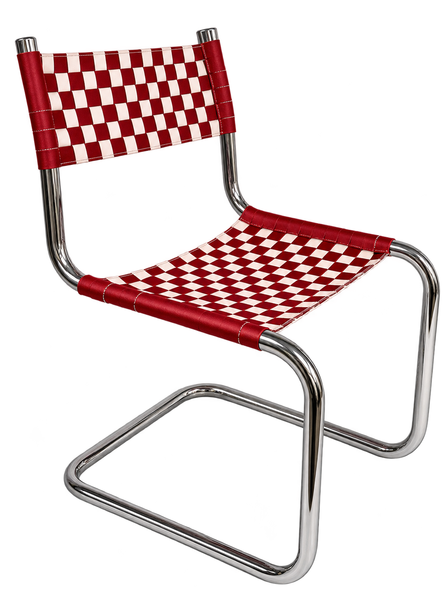
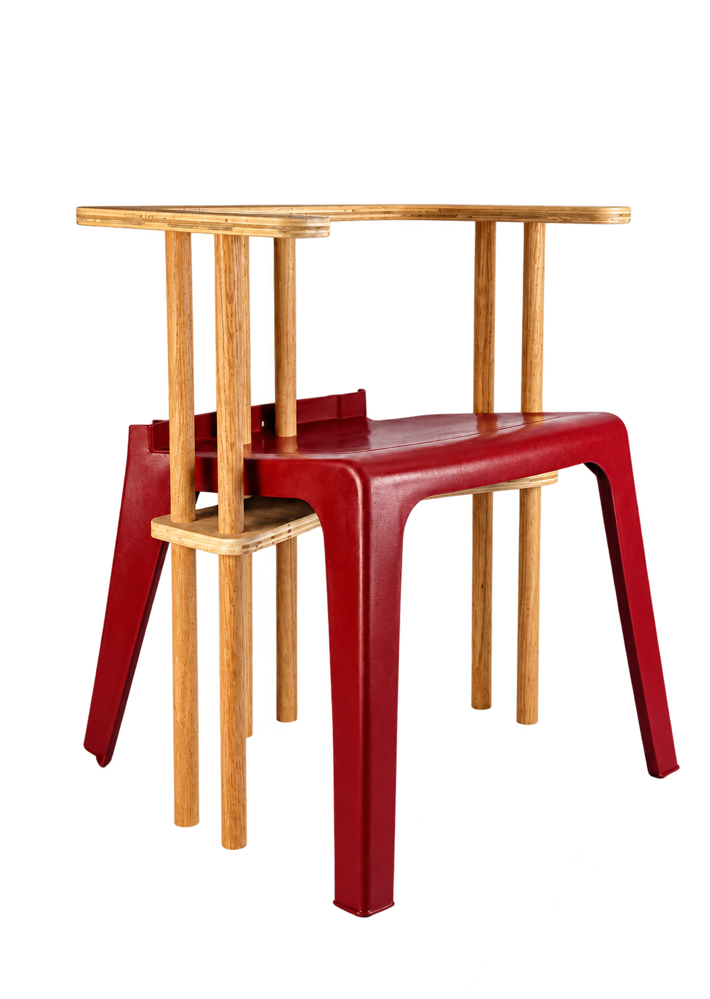
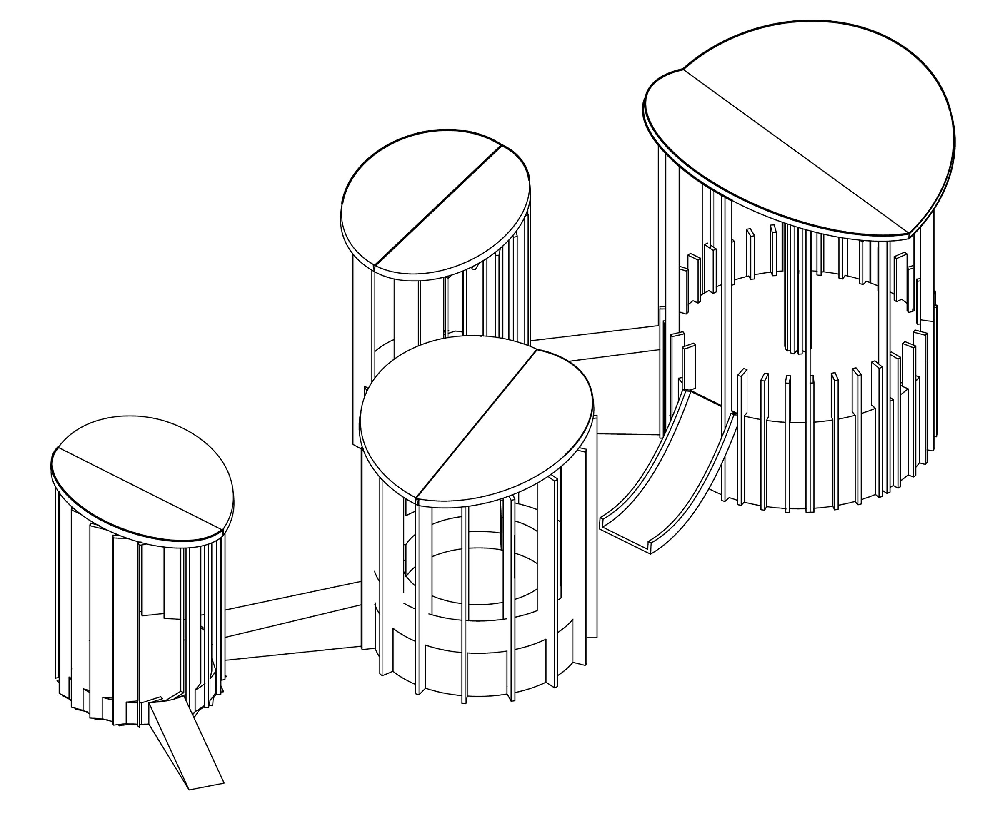

01 · Latest study
Fall 2026
In Tension
The Cesca, rewoven
- Materials
- Chrome frame · Red and white webbing
- Process
- Weaving · Machine stitching · Assembly

Product / Industrial design · Selected work 2025—2026
2025—2026 / 01—07
The Cesca, rewoven

A second life for the Monobloc

Transformable plywood seating

Natural geometry, translated into light

Pistachio shells as a cast composite

Four shelters, one spatial sequence

Shared space and private reflection

Experience · 2026 / Professional practice
Creative Design Intern
AI workflow research and collaborative landscape renderings that helped sell projects.
Landscape architecture & design-build firm
Property care & luxury outdoor living · Huntington, New York

A little about me
I'm a student at Tulane University focused on industrial and graphic design. My work connects craft, function, and narrative, from furniture and lighting to spatial studies.
More about me